[PROJECT TW0]
Part 1.1: Convolutions from Scratch
L: 2 for loops R: 4 for loops
2 loops does fewer operations so its runtime is shorter. Boundaries are handled using zero-fill padding, same as in scipy. Outputs are 2D arrays, same as scipy.
Comparing this with scipy's convolve2d, the output will be similar given the input is padded correctly.
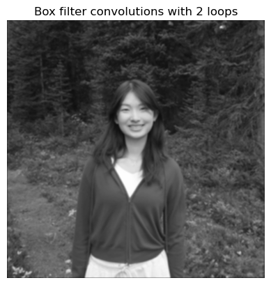
There is barely any visual difference, but dark objects in 2 loops (e.g. hair, trees) look darker than in the 4 loops.
Part 1.2: Finite Difference Operator
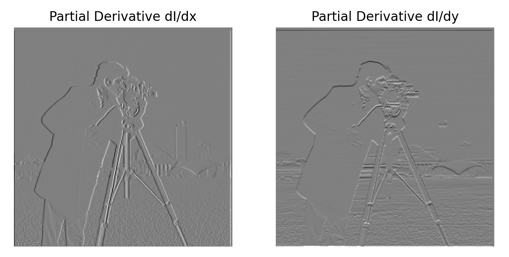
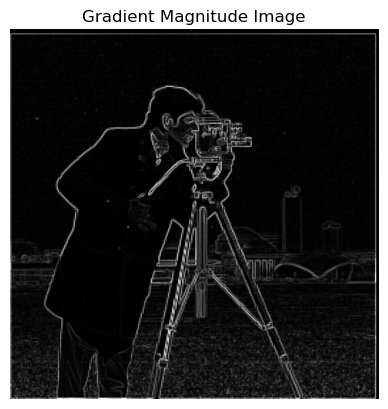
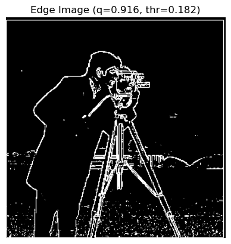
The higher the q, the image becomes less noisy but the lines also become fainter. I settled on a threshold where the background scenery is still visible, even if it means more noise.
Part 1.3: Derivative of Gaussian (DoG) Filter

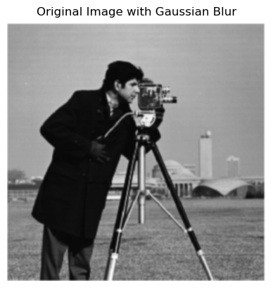
After convoluting with Gaussian filter, image becomes blur as pixels blend into average values of pixels around it.
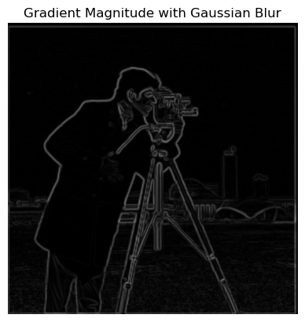
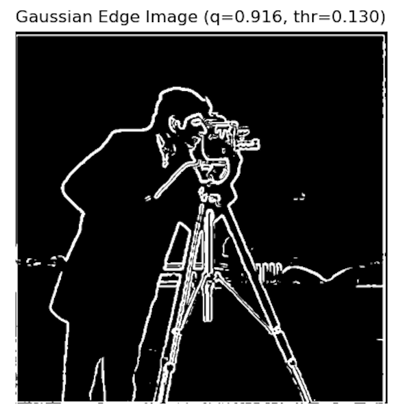
With gaussian filter beforehand, the binarized edge image is much less noisy at the same threshold, while preserving the fine details. The lines are also slightly thicker and more consistent in thickness (less shaky).
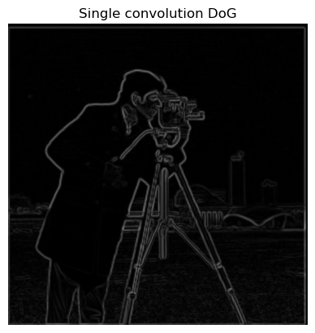
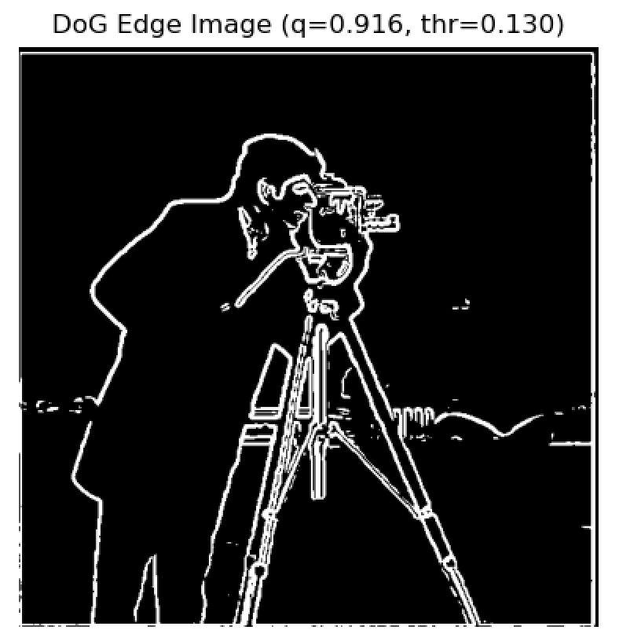
With single convolution DoG, the results are identical to the previous.
Part 2.1: Image "Sharpening"

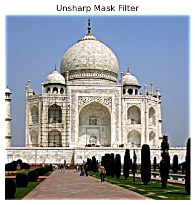
The details of the Taj become more prominent, specifically the intricate line details. Varying the sharpening amount makes the lines more prominent. This is expected because the high frequencies (details) are getting enhanced.
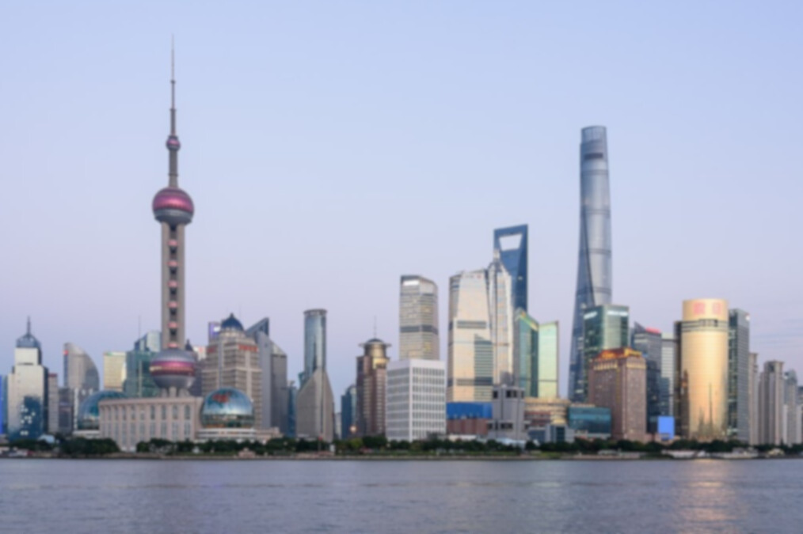
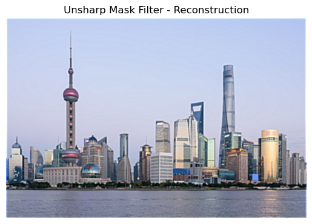
Reconstructing a blurry picture of The Bund, it's also observed that the line details are most prominently sharpened (e.g. windows on buildings, storeys). However, because the blurry image has a reduced resolution, the results will also not have a very high resolution, so the image still does not appear sharp/crisp.
A comparison of the original imgae and the output is below:
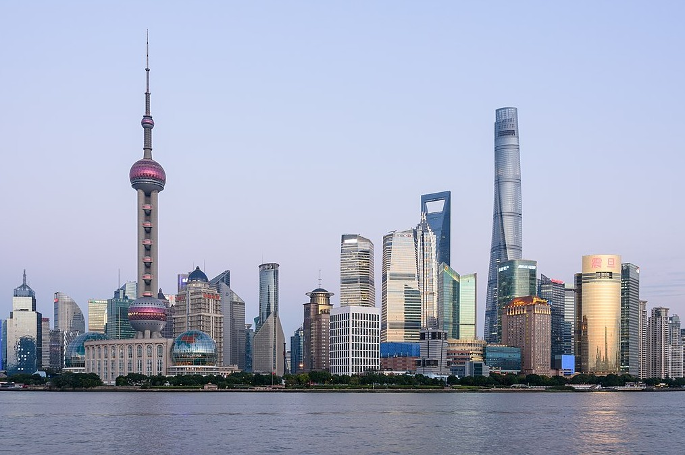
Part 2.2: Hybrid Images
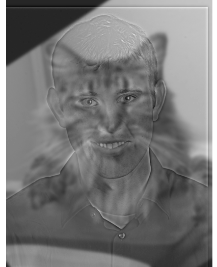
Derek (high pass) and Nutmeg (low pass)
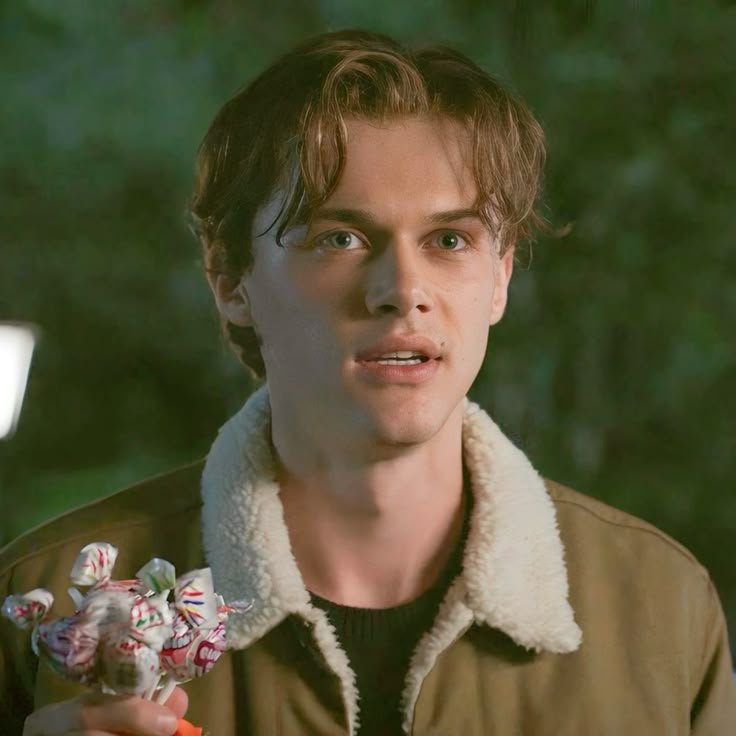
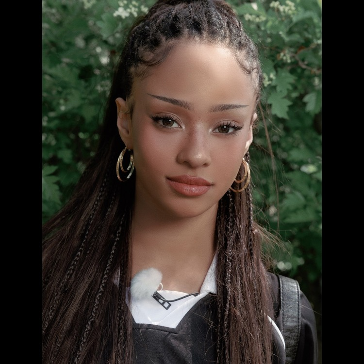
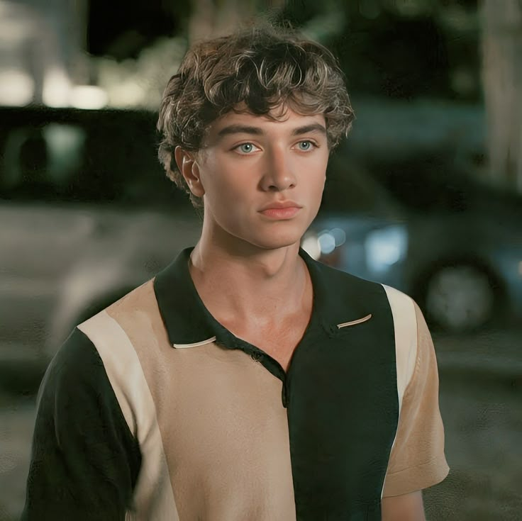
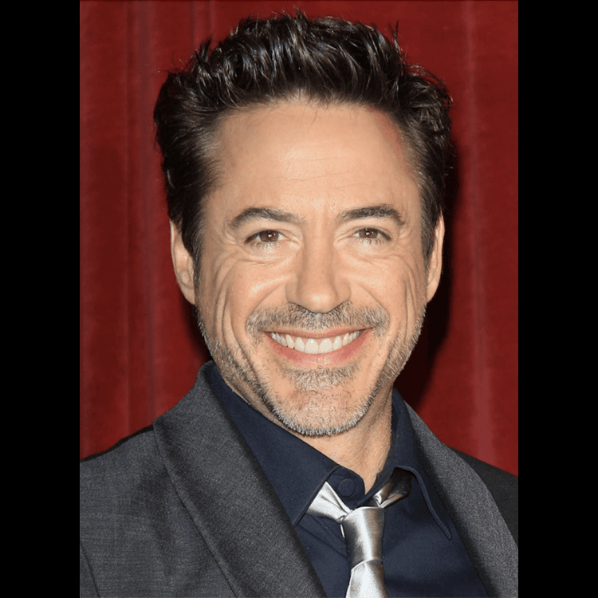
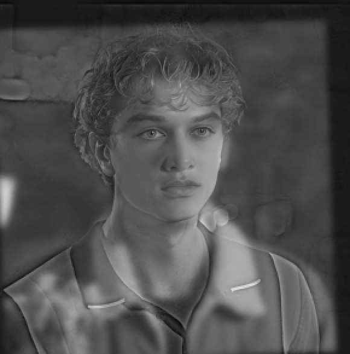
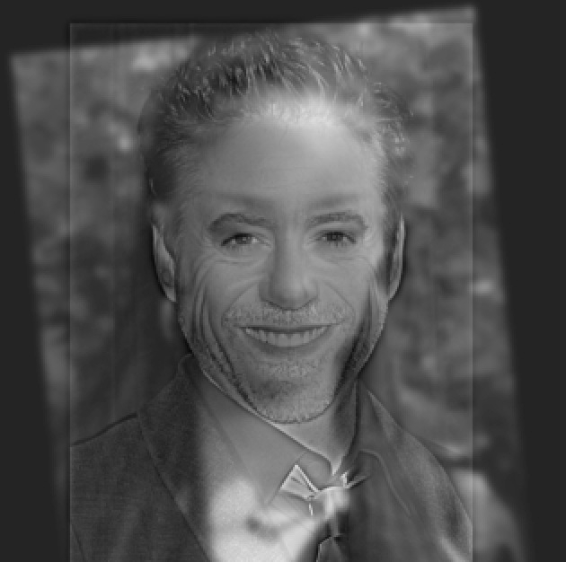
2 other hybrid images. The first is of Conrad (low pass) and Jeremiah (high pass) from the show TSITP. The second is Robert Downey Jr (high pass) and Manon Bannerman (low pass). I chose these 2 because of their different expressions.
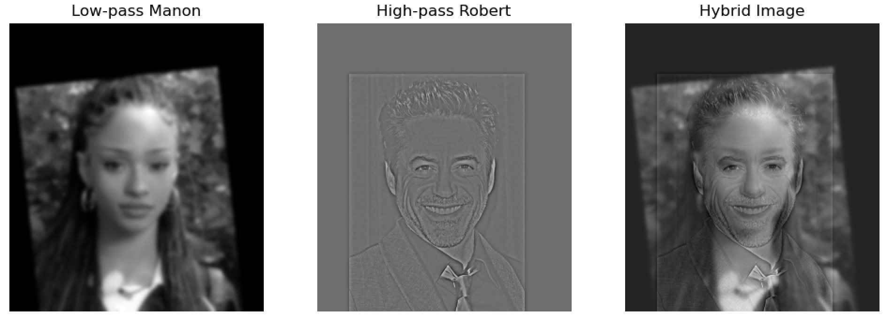
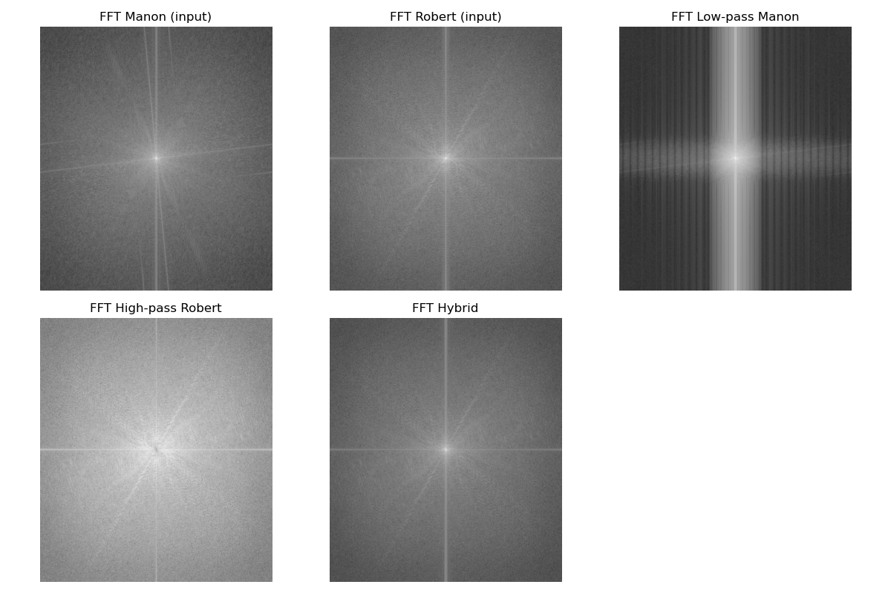
Filtered images and frequency domains of Robert x Manon
Part 2.3: Gaussian and Laplacian Stacks
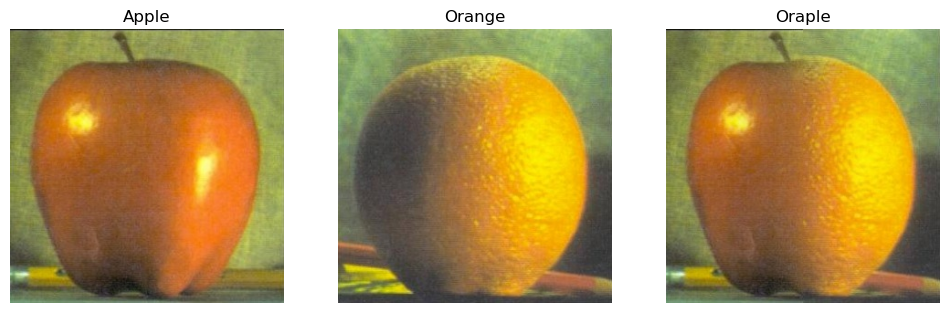
Oraple: By adjusting sigma, the blend can be adjusted to be more or less seamless.
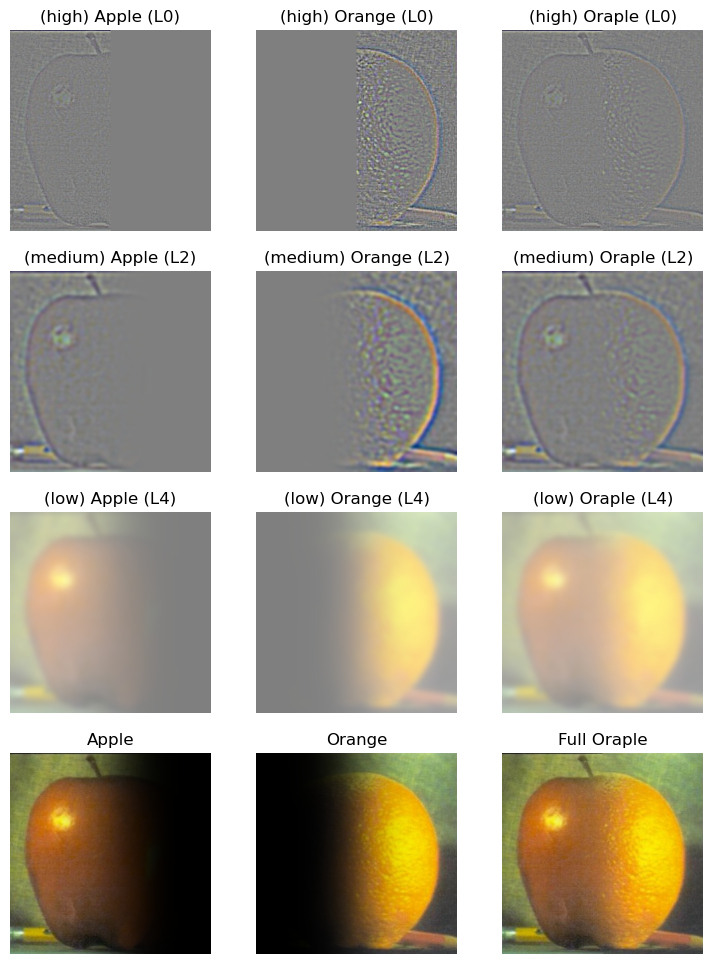
Gaussian and Laplacian stacks for Oraple, no downsampling. It was important to ensure the color channels were consistent or a LOT of errors appear.
Part 2.4: Multiresolution Blending
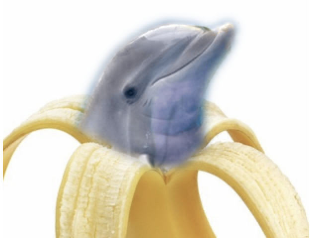
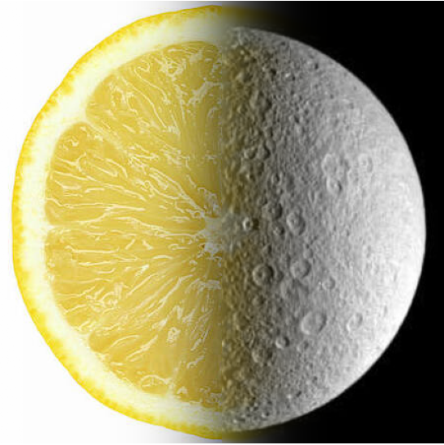
Dolphin X Banana with irregular mask (it was difficult to feather out the edges without the original blue background spilling over too much)
and Lemon X Moon.
The most important thing I learnt
Standardize the shape/dimension of the image ASAP to have the same format!! Many bugs could have been prevented if I paid more attention to the image shape, number of color channels, and doing sanity checks to ensure the images being stacked together have consistent input dimensions.